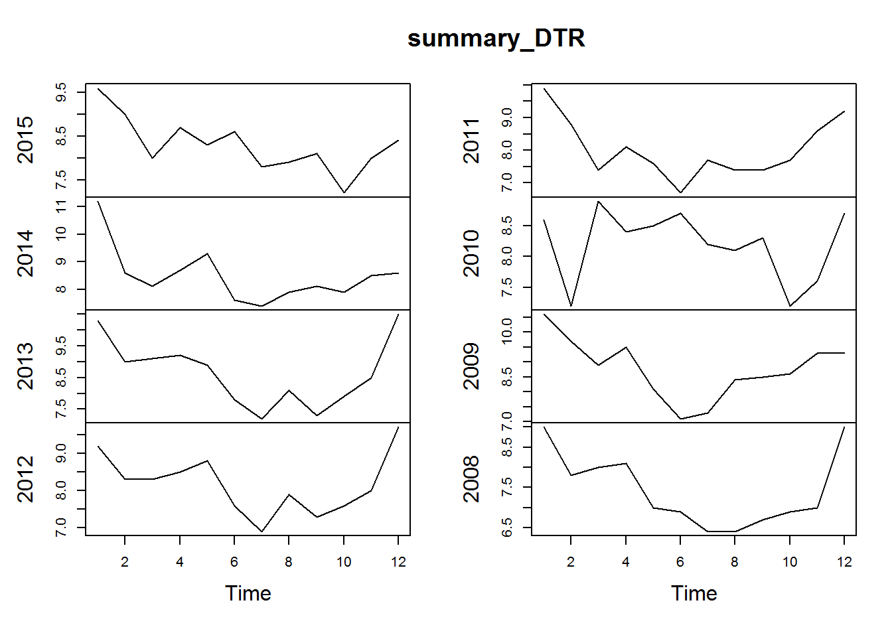
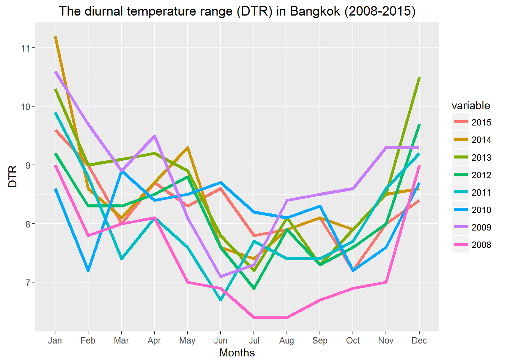
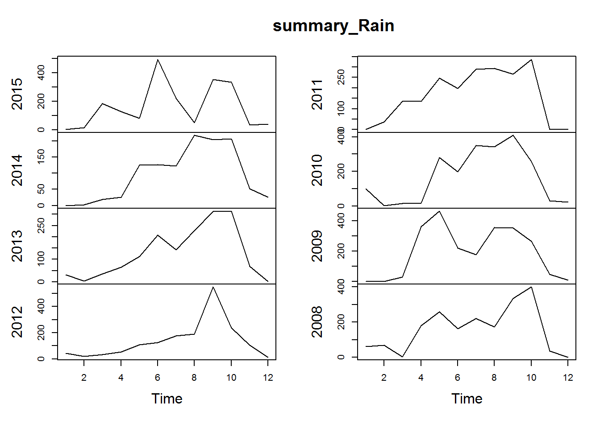
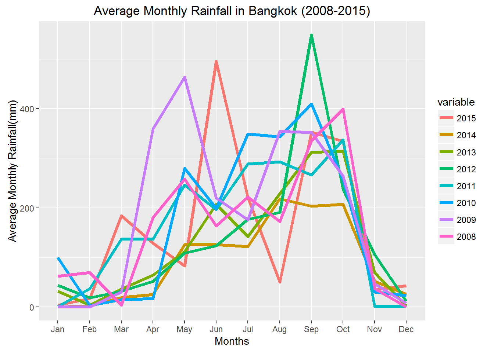
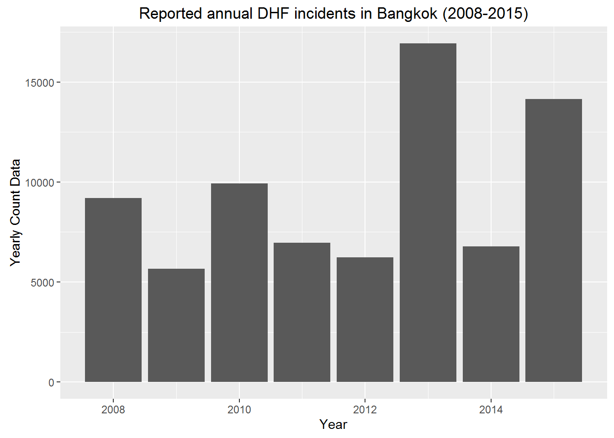
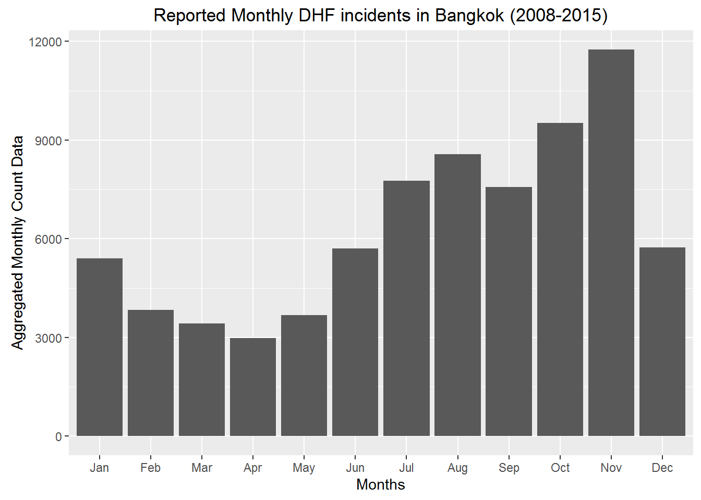
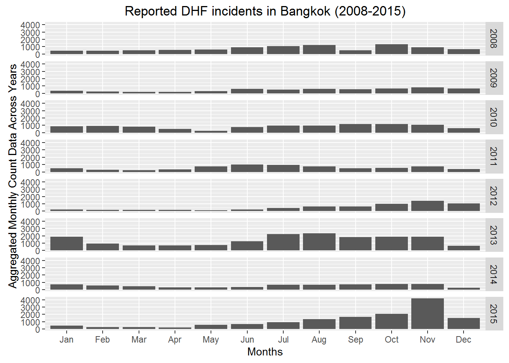
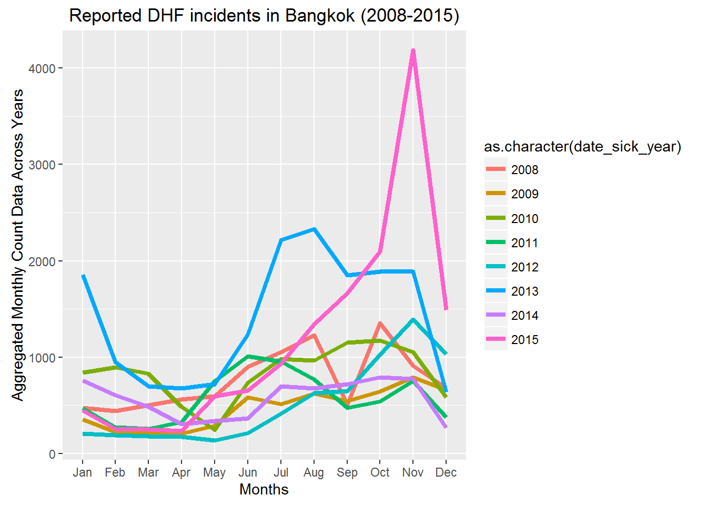
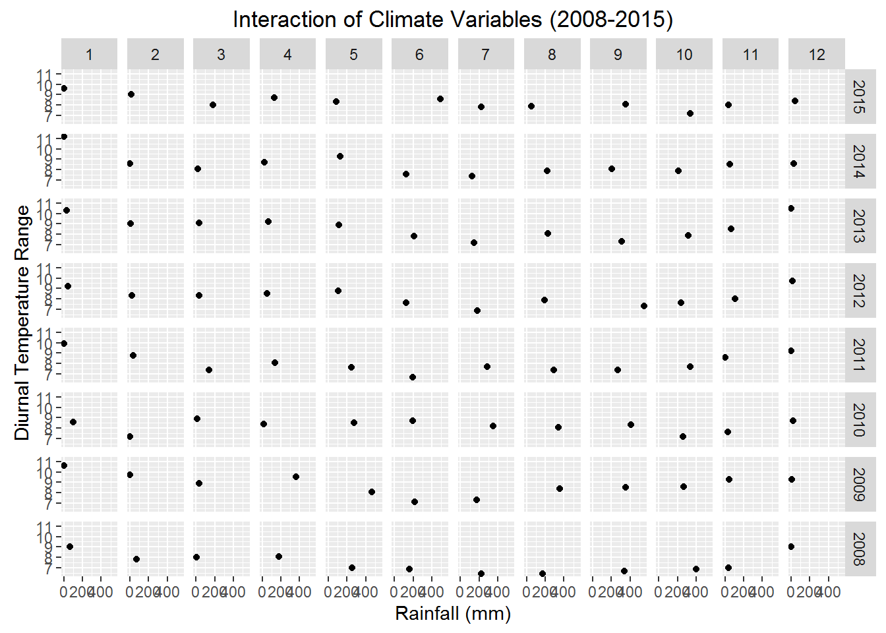
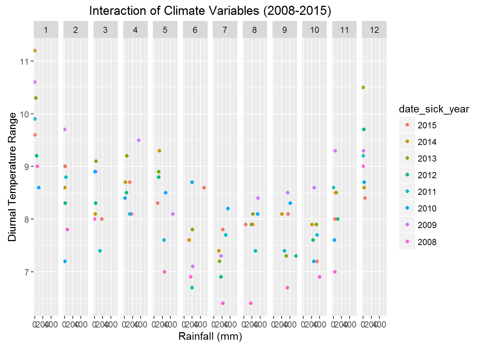

3 Exploratory Data Analysis
I import the important the following packages into R.
require(ggplot2) # used in plotting
require(reshape)
require(plotly)
require(bnlearn) # used for Bayesian Networks
require(mgcv) # used for Generalized Additive Modeling
require(fpp)
require(lubridate)
require(bsts)
require(dplyr)
require(CausalImpact)
require(xtable)
library(dplyr)
library(tidyr)3.1 The description of variables
The description of the data variables.
| Variable Name | Description |
|---|---|
| connected_district_code | The rows have the codes of 50 districts of Bangkok. The colums tell its connecions to other districts. |
| district_code | Has geocodes, postal code of each of the district, their names, population and area. |
| district_garbage_data | Has yearly and daily average gardbage collection data for 3 consecutive years. |
| district_population | Has population deographics into age groups in each district, their total population, number of communities and the total area. |
3.2 The diurnal temperature range (DTR)
DTR is the difference between the daily maximum and minimum temperature.
The plot summary and visualization is given below:
AverageDTRInBangkok_2008.2015 Month 2015 2014 2013 2012 2011 2010 2009 2008
1 Jan 9.6 11.2 10.3 9.2 9.9 8.6 10.6 9.0
2 Feb 9.0 8.6 9.0 8.3 8.8 7.2 9.7 7.8
3 Mar 8.0 8.1 9.1 8.3 7.4 8.9 8.9 8.0
4 Apr 8.7 8.7 9.2 8.5 8.1 8.4 9.5 8.1
5 May 8.3 9.3 8.9 8.8 7.6 8.5 8.1 7.0
6 Jun 8.6 7.6 7.8 7.6 6.7 8.7 7.1 6.9
7 Jul 7.8 7.4 7.2 6.9 7.7 8.2 7.3 6.4
8 Aug 7.9 7.9 8.1 7.9 7.4 8.1 8.4 6.4
9 Sep 8.1 8.1 7.3 7.3 7.4 8.3 8.5 6.7
10 Oct 7.2 7.9 7.9 7.6 7.7 7.2 8.6 6.9
11 Nov 8.0 8.5 8.5 8.0 8.6 7.6 9.3 7.0
12 Dec 8.4 8.6 10.5 9.7 9.2 8.7 9.3 9.0plot.ts(summary_DTR)
Plotting DTR for all the years on the same plot.

3.3 The average monthly rainfall in Bangkok.
The plot summary for monthly rainfall and visualization is given below:
AverageRainInBangkok_2008.2015 Month 2015 2014 2013 2012 2011 2010 2009 2008
1 Jan 3.5 0.000 32.206 43.354 0.630 99.9 0.0 62.1
2 Feb 16.8 2.512 4.098 18.654 37.342 2.9 0.0 69.3
3 Mar 183.9 19.314 35.918 31.888 136.716 14.6 30.2 3.6
4 Apr 128.9 25.358 64.366 51.914 136.662 17.3 359.6 180.8
5 May 82.5 125.410 111.540 108.984 246.128 279.3 463.4 257.9
6 Jun 495.0 125.936 206.946 123.418 196.584 198.8 219.3 163.6
7 Jul 220.8 122.270 142.212 176.626 288.680 348.7 175.7 221.8
8 Aug 50.5 218.006 228.214 190.436 292.804 343.1 354.0 172.1
9 Sep 352.4 203.436 312.220 548.736 266.538 409.5 351.8 335.2
10 Oct 334.2 206.998 314.090 236.996 337.502 256.3 264.2 399.3
11 Nov 34.9 51.506 69.286 106.022 1.880 30.6 46.5 36.7
12 Dec 42.7 25.926 2.060 12.256 0.584 22.7 7.3 0.0plot.ts(summary_Rain)
Plotting average monthly rainfall for all the years on the same plot.

3.4 The dengue incidences in Bangkok Districts

The plot shows the Dengue hemorrhagic fever(DHF) incidence peaked in 2013 and 2015.

The above plot shows that most of the DHF incidents were reported in the month of October and November.


